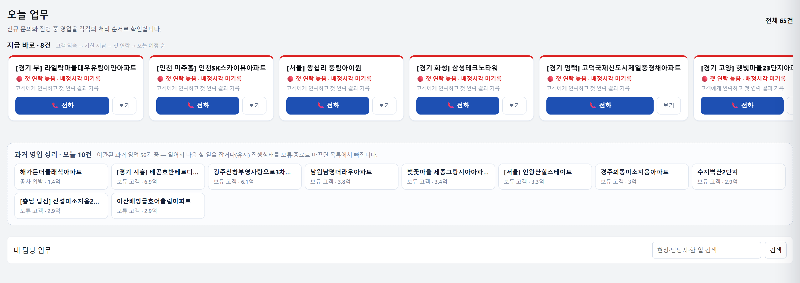

영업담당자가 로그인해서 매일 하는 일을 순서대로 정리했습니다. 접속 주소: poursolution.github.io/netform-crm
다음 할 일과 날짜를 남겨 두면, 그 날짜에 오늘 업무로 다시 올라옵니다. 따로 일정을 정리하지 않아도 됩니다.
| 메뉴 | 하는 일 |
|---|---|
| 오늘 업무 | 오늘 연락하고 처리할 건 확인 |
| 견적문의 | 배정받은 문의 확인, 연락 결과 기록 |
| 파이프라인 | 진행 중인 내 영업건 관리 (관계관리 단계 포함) |
| 확장관리 | 수주한 고객 이어서 관리 |
| 고객 자산 | 현장의 지난 이력 조회 |
로그인하면 가장 먼저 열리는 화면입니다. 현황을 보는 화면이 아니라 오늘 처리할 일을 보는 화면입니다.
| 구역 | 내용 | 할 일 |
|---|---|---|
| '지금 바로' 카드 줄 | 오늘 연락할 고객. 고객 약속 → 기한 지남 → 첫 연락 → 오늘 예정 순서 | 카드의 전화로 연락하고 결과를 남깁니다. 보기는 상세를 엽니다. |
| '과거 영업 정리' | 예전 자료에서 옮겨 온 영업 중 다음 할 일이 없는 건. 하루 10건씩 나옵니다. | 열어서 다음 할 일을 잡거나, 진행상태를 보류·종료로 바꿉니다. |
| '내 담당 업무' | 견적문의 관리 표, 파이프라인 관리 표 | 위에서부터 처리를 눌러 진행합니다. 검색으로 현장을 찾을 수 있습니다. |

결과를 남긴 건은 목록에서 빠집니다. 위에서부터 처리해서 목록을 비우는 것이 하루 업무입니다.
연락 결과, 다음 할 일, 날짜 세 가지를 모두 적어야 저장됩니다. 전화를 안 받았을 때도 '전화 안 받음'으로 남기고 다시 걸 날짜를 잡아 주세요.
| 선택 | 언제 |
|---|---|
| 통화함 · 진행 중 | 통화가 됐고 계속 진행할 때. 다음 확인일만 고릅니다. |
| 다시 연락하기로 함 | 통화가 짧았거나 나중에 다시 걸기로 했을 때 |
| 전화 안 받음 | 연결이 안 됐을 때. 다시 걸 날짜만 고릅니다. |
| 고객과 약속함 | 방문·견적 발송 등 고객과 약속을 잡았을 때 |
| 위치 | 내용 |
|---|---|
| 위쪽 | 지금 할 일, 영업 흐름(지금까지 연락한 순서) |
| 왼쪽 | 고객 연락처, 현장 연락처, 현장 정보, 같은 현장의 다른 영업건 |
| 가운데 | 이 단계에서 챙길 정보, 영업 진행도, 최근 활동 |
| 오른쪽 | 진행상태 변경, 확인할 항목, 자료(사진·견적서), 추가 관리정보, 공종·금액 |
계약이 체결되면 계약일과 계약금액을 '공종 · 금액'에 입력해 주세요. 계약실적은 계약 체결일과 체결 당시 담당자 기준으로 잡힙니다.
당장 견적이나 입찰 단계가 아니더라도 계속 관리해야 하는 고객을 봅니다. 파이프라인의 '관계관리' 단계입니다.
본인이 수주한 고객을 이어서 관리합니다. 연락할 때가 된 고객을 확인하고, 연락한 뒤 결과와 다음 접촉일을 남깁니다.
현장 이름으로 찾아서 그 현장의 사람, 영업, 수주 이력을 조회합니다. 조회만 하는 화면입니다.
휴대폰에서 같은 주소로 접속하면 모바일 화면이 열립니다. PC와 같은 자료입니다.
| ① | 연락하면 결과를 남깁니다. 통화함, 전화 안 받음 중 하나만 골라도 됩니다. |
|---|---|
| ② | 다음 할 일을 비워 두지 않습니다. 무엇을 언제 할지 정해 두면 그 날짜에 다시 올라옵니다. |
| ③ | 계약하면 계약일과 금액을 입력합니다. 이 기록이 계약실적의 근거입니다. |
| 질문 | 답 |
|---|---|
| 오늘 업무에 아무것도 없어요 | 오늘 처리할 건이 없다는 뜻입니다. 진행 중인 영업건은 파이프라인에서 확인합니다. |
| 일정이 바뀌었어요 | 상세의 '지금 할 일'에서 다른 날짜로를 눌러 날짜를 다시 잡습니다. |
| 카드에 '다음 할 일 없음'이 떠요 | 영업건을 열어 '다음 할 일 설정'에서 할 일과 기한을 정하면 사라집니다. |
| 내 건이 아닌 문의가 배정됐어요 | 관리자에게 알려 주세요. 배정은 관리자가 바꿉니다. |
| 혼자 풀기 어려운 건이 있어요 | 영업건 상세의 '작업 더보기'에서 지원 요청을 남깁니다. |
| 저장했는데 화면에 안 보여요 | 오른쪽 위 새로고침(↻)을 누릅니다. 그래도 안 보이면 관리자에게 알려 주세요. |
쓰면서 불편하거나 빠진 부분은 관리자에게 바로 알려 주세요. 의견을 모아 보완합니다.